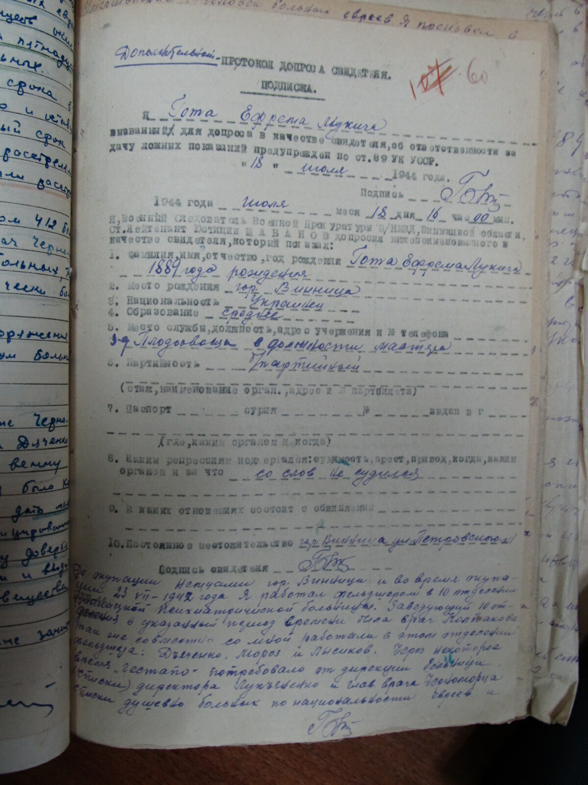
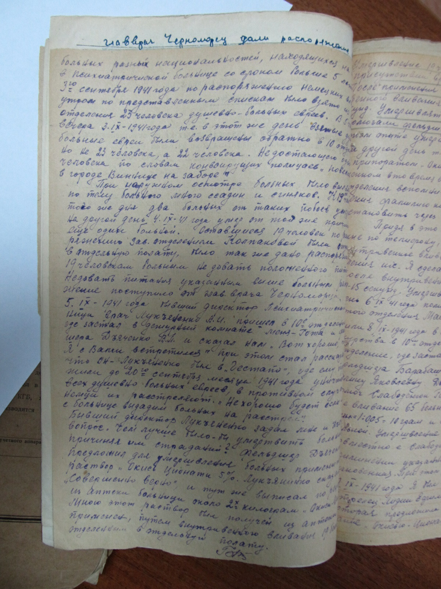
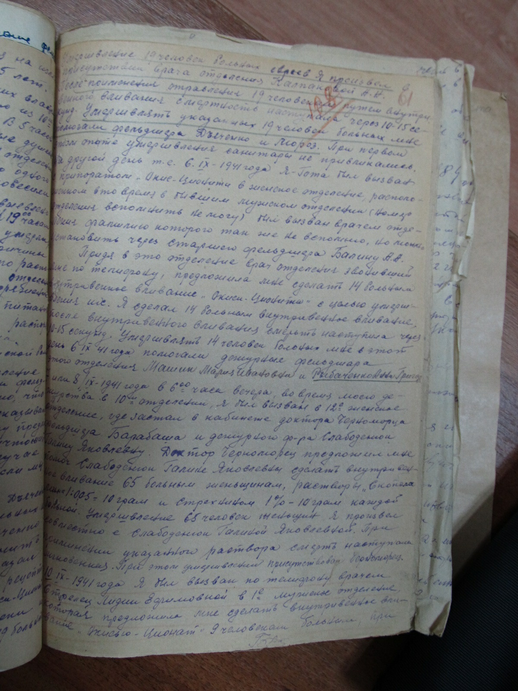
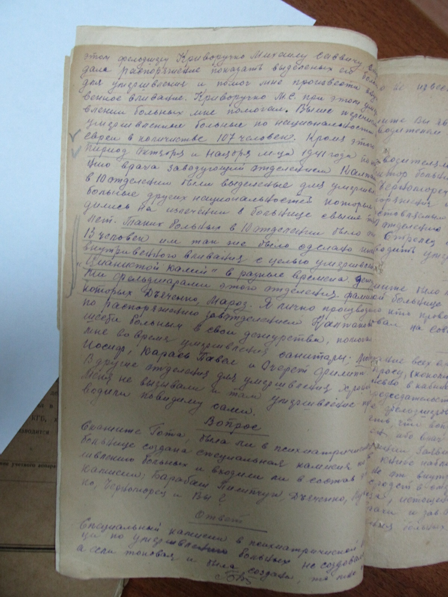
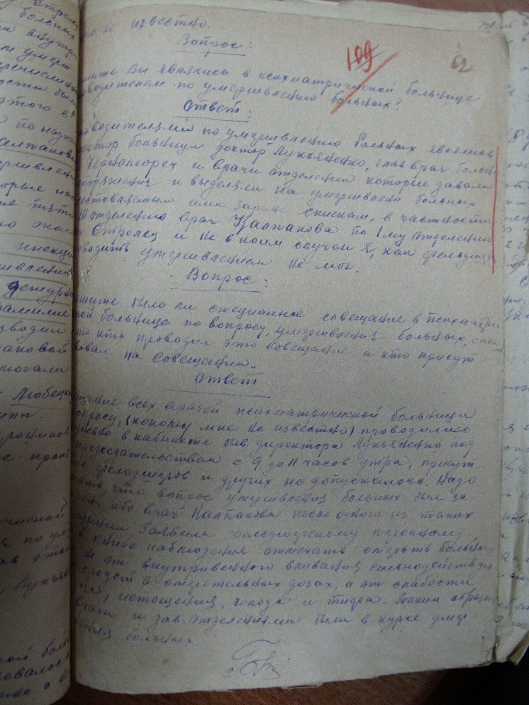
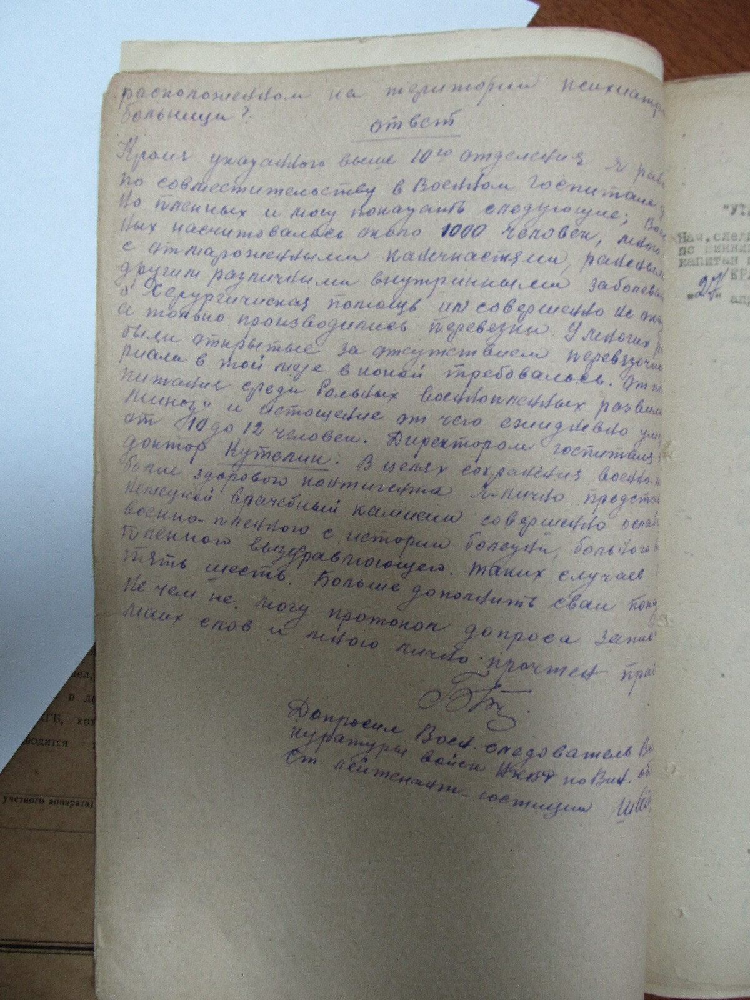

Вбивства єврейських пацієнтів та важкохворих передували загальній хвилі насильства у психіатричних лікарнях на території України.
Хронологічно ці страти збігаються з першою фазою Голокосту в райхскомісаріаті Україна, який тривав з вересня по грудень 1941 року, коли німецька поліція безпеки і СД та місцеві поліцейські систематично проводили масові вбивства єврейського населення.
Центральний вхід в будівлю Вінницької психіатричної лікарні. 1942 р. © Приватна колекція М. Богарта
Перші розстріли євреїв у Вінниці відбулись не пізніше 29 липня 1941 р., тобто відразу після окупації міста 19-20 липня, коли зондеркоманда “4б” айзацкоманди ”С“ розстріляла 146 євреїв, представників інтелігенції міста. У цей час за наказом воєнної адміністрації звільнили працівників Вінницької психіатричної лікарні єврейської національності.
Список єврейських працівників Вінницької психіатричної лікарні, складений на вимогу німецького військового командування. 16 серпня 1941 р. © Державний архів Вінницької обл.
Наступне масове вбивство сталося у серпні 1941 р., коли було розстріляно 600 євреїв міста. 12 вересня 1941 р. 3-а рота 314 поліцейського батальйону розстріляла 1000 осіб єврейської молоді Вінниці. Через декілька днів, 19 вересня, 45-й резервний поліцейський батальйон розстріляв понад 10 000 євреїв у П’ятничанському лісі.
Пам’ятник на місці розстрілів євреїв Вінниці 19 вересня 1941 р. Фото 2018 р. © Приватна колекція Ернста Ройса.
5 вересня 1941 року, директора Вінницької психіатричної лікарні, Антона Лук’яненка, викликали до комендатури, де йому поставили вимогу вбити пацієнтів-євреїв упродовж двох тижнів. Приблизно в той же час з лікарні розпочали конвоювати окремі групи єврейських пацієнтів у місто на розстріл. Упродовж вересня 1941 р. співробітники лікарні робили пацієнтам ін’єкції розчину ціанистого калію та дистильованої води, після чого останні помирали в муках.






Протокол допиту фельдшера Вінницької психіатричної лікарні Єфрема Готи зі свідченнями про вбивство єврейських пацієнтів лікарні. 1944 р. © ГДА СБУ у м. Вінниця
21-го вересня о 5 годині ранку в лікарню прибуло 5 німецьких військових, які розстріляли на території лікарні (в районі піщаного кар’єру) 36 пaцієнтів (4 та 13 відділень), яких не встигли отруїти. Це були військовослужбовці 45-го резервного поліцейського батальйону. Разом з ними були розстріляні також працівники лікарні, євреї за національністю: Єва Гельблу, Фаїна Манзон, Софія Грушман, Розалія Штрик. Впродовж вересня до початку жовтня 1941 року на території Вінницької лікарні було вбито 412 єврейських пацієнтів.
Сучасний вигляд території старого кладовища Вінницької обласної психоневрологічної лікарні ім. О.І. Ющенка, де проводилися розстріли єврейських пацієнтів та лікарів у 1941 р. Фото 2020 р.
ДОДАТКОВІ ДОКУМЕНТИ


Заява на ім’я військового коменданта міста Вінниця від директорки Вінницької психіатричної лікарні Тетяни Фішер з проханням дозволити пацієнтам та працівникам лікарні прибирати врожай на полях, які належать лікарні. (нім. мова) Липень 1941 р. © Державний архів Вінницької обл.
Директорка повідомляє, що у лікарні утримується 1719 пацієнтів, для їх харчування лікарня має сільськогосподарські угіддя площею 500 га між селами Шереметка і Медвеже Вушко. Потрібні дозволи для роботи на полях 100 пацієнтів та обслуговуючого персоналу, бо минулого дня німецькі солдати розстріляли 8 пацієнтів, оскільки вони не мали необхідних документів.
Посвідчення Хаїма Розенбліта, про те, що він працює у Вінницький психіатричній лікарні. 9 серпня 1941 р. © Державний архів Вінницької обл.
Посвідчення Зельмана Фурмана про те, що він працює у Вінницький психіатричній лікарні. 9 серпня 1941 р. © Державний архів Вінницької обл.
Довідка Хаїма Беренштейна про те, що він працює у Вінницькій психіатричній лікарні бляхарем, «дуже необхідний для роботи по лагодженню покрівлі лікарні». 10 жовтня 1941 р. © Державний архів Вінницької обл.
Обкладинка історія хвороби пацієнтки Вінницької психіатричної лікарні Зальцерман Перлі Хаїмівни. 1937–1941 рр. © Державний архів вінницької обл.
На документі стоїть дата смерті :14 серпня 1941 р. Ймовірно, Перлю Зальцерман вбили, як інших єврейських пацієнтів лікарні, а дату змінили, щоб приховати злочин. Подібна практика використовувалася також, наприклад, і в Німеччині під час програми Т4.
Наказ № 276 директора Вінницької психіатричної лікарні Антона Лук’яненка про заборону самовільного невиходу на роботу без поважної причини, або звільнення. 4 жовтня 1941 р. © Державний архів Вінницької обл.
Список санітарів і санітарок 1-го відділення Вінницької психіатричної лікарні, які не з’явилися без попередження на роботу. 16 вересня 1941 р. © Державний архів Вінницької обл.
Схоже, це була реакція персоналу на вбивства пацієнтів, які тривали у лікарні з початку вересня 1941 р., прагнення співробітників уникнути особистої участі у знищенні людей з ментальними розладами.